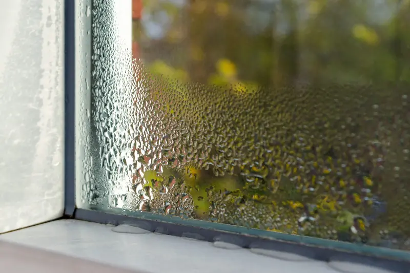
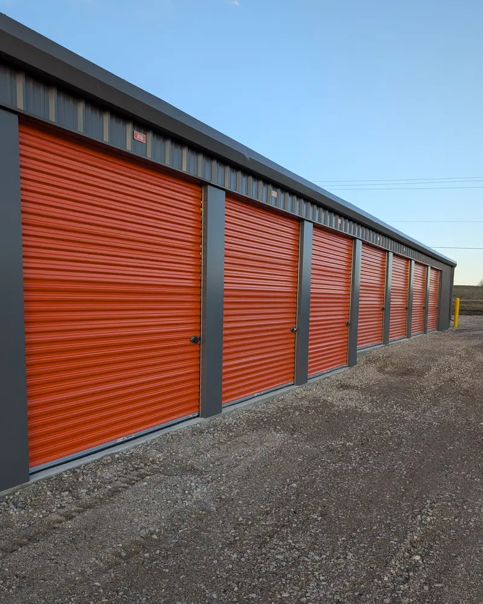

Climate-Controlled vs Regular Storage: Which Do You Actually Need?
An honest look at when climate control is worth the premium and when standard units are the smarter choice.

If you've been shopping around for self storage in Hutchinson, you've probably noticed that some facilities advertise climate-controlled units at a premium price. It sounds important — who doesn't want their stuff protected from the elements? But is it actually worth paying significantly more every month? For most people storing most things, the honest answer is no. And we say that as a storage facility that wants your business.
Here at Reno County Storage, we offer standard drive-up units from 5x5 to 10x30. We don't offer climate-controlled units, and we're upfront about that. But we also believe in giving you the straight story so you can make the right decision for your situation. This guide breaks down exactly what climate-controlled storage is, the narrow set of items that genuinely benefit from it, and why the vast majority of belongings do just fine in a well-maintained standard unit — even through south central Kansas summers and winters.
What Is Climate-Controlled Storage?
Climate-controlled storage units are typically interior units accessed through hallways inside a larger building. They maintain a temperature range of roughly 55 to 85 degrees year-round and often include some level of humidity reduction. The idea is to create a stable environment that protects sensitive items from extreme heat, cold, and moisture.
That sounds great on paper. But there are a few things the marketing doesn't always mention. First, these units are almost always interior access — meaning you park your vehicle, unload onto a cart or dolly, and wheel everything through hallways and around corners to reach your unit. There's no backing your truck up to the door. For anyone who's ever moved a couch or a mattress, that's a significant difference. Second, the temperature range is maintained, but it's not precise climate control like your living room. You're getting a buffer against extremes, not a perfectly controlled environment.
When You Genuinely Need Climate Control
Let's be clear: there are items that really do benefit from climate-controlled storage, and if you're storing them, it's worth seeking out a facility that offers it. Here's the short list.
- Antique wood furniture. We're talking about pieces with real value — heirloom dressers, hand-carved tables, vintage cabinets. Older wood is more susceptible to cracking, warping, and splitting when it goes through cycles of heat and humidity. If your grandmother's mahogany armoire is irreplaceable, climate control is a reasonable investment.
- Musical instruments. Acoustic guitars, pianos, violins, cellos — anything with wood and precise tuning can suffer in fluctuating conditions. The glue joints in a good acoustic guitar can weaken, and wooden components can warp enough to affect playability permanently.
- Fine art and oil paintings. Canvas stretches and contracts with humidity changes, and paint can crack or flake. If you've got original artwork with real monetary or sentimental value, protect it properly.
- Wine collections. Temperature swings are the enemy of wine. If you're storing a serious collection, you need temperature stability.
- Medical equipment. Certain medical devices and supplies have specific storage temperature requirements. Check the manufacturer's guidelines.
- Vinyl record collections. Records warp in heat, and sleeves can grow mold in humidity. A serious vinyl collection deserves climate control.
- Important documents stored long-term. We're talking years, not months. Paper absorbs moisture, and over long periods, humidity can cause degradation, mold, and ink fading. If you're archiving business records or irreplaceable personal documents for years, climate control helps.
Notice a pattern? These are all items that are either irreplaceable, high-value, or made from materials that are inherently sensitive to environmental changes. For most Hutchinson families, this list covers a small fraction of what they're putting into storage.
When Standard Storage Works Just Fine
Here's the list that covers what most people actually store — and none of it needs climate control.
- Modern furniture. Your IKEA bookshelf, that sectional from Nebraska Furniture Mart, the dining table you bought five years ago — modern mass-produced furniture is built with engineered wood, metal hardware, and synthetic fabrics designed to handle normal environmental variation. It's not going to crack because the unit hit 95 degrees in July.
- Clothing and linens. Wash everything, make sure it's completely dry, and store it in sealed plastic bins. Your winter coats, bedding, and seasonal clothes will be perfectly fine in a standard unit.
- Kitchen items. Pots, pans, dishes, small appliances, utensils — none of these care about temperature or humidity. Wrap fragile items in packing paper so they don't chip, and you're good.
- Tools and hardware. A light coat of machine oil on metal tools prevents rust far more effectively than climate control ever could. Your drill, socket set, and hand tools are built to live in garages and workshops, not climate-controlled rooms.
- Sporting goods. Golf clubs, camping gear, fishing rods, hunting equipment — all of it is designed for the outdoors. It can certainly handle a storage unit.
- Holiday decorations. Christmas ornaments, Halloween props, Easter baskets, Fourth of July flags — use plastic bins instead of cardboard boxes, and everything will survive just fine season after season.
- Boxes of household items. Books, photo albums in sealed bins, board games, kids' toys, miscellaneous household goods — standard storage handles all of it without issue.
- Lawn and outdoor equipment. Mowers, trimmers, leaf blowers, snow blowers, patio furniture — these live outside or in unheated garages by design. A storage unit is actually a step up from where most of this stuff normally sits.
The Real Enemy: Humidity, Not Temperature
Here's something that surprises a lot of people: most storage damage comes from humidity, not temperature. South central Kansas gets humid — anyone who's walked through Carey Park or attended the Kansas State Fair in September knows that firsthand. Summer humidity in Reno County regularly pushes above 70 percent, and that moisture is what causes mold, mildew, musty smells, and rust.
But here's the key insight: you don't need a climate-controlled unit to manage humidity. A $5 bucket of DampRid from the hardware store absorbs moisture from the air inside your unit and prevents the vast majority of humidity-related problems. Replace it every few months, and you've solved 90 percent of what climate control addresses — at a fraction of the cost.
Proper packing matters too. Use plastic bins instead of cardboard boxes for anything you want to keep dry. Cardboard absorbs moisture and becomes a breeding ground for mold. Sealed plastic bins create their own mini climate-controlled environment for whatever's inside them. Between DampRid and plastic bins, you're well protected against Kansas humidity without paying a premium every month.
The Cost Difference Is Significant
Let's talk numbers, because this is where the decision gets real. In the Hutchinson area, a standard 10x10 storage unit typically runs between $89 and $150 per month depending on the facility and features. A climate-controlled 10x10? You're looking at $135 to $276 per month — and that's if you can find one in Reno County, since most local facilities offer standard units.
That means climate control can cost you anywhere from 50 percent to nearly three times more per month. Over a year, the difference adds up to hundreds or even over a thousand dollars. For the narrow category of items that truly need it, that's money well spent. For everything else, it's an unnecessary expense.
At Reno County Storage, our rates are competitive and straightforward. Every unit comes with a free lock, 24/7 gate access, month-to-month leases with no long-term contracts, and full security monitoring. You're not paying for amenities you don't need, and you're not locked into anything if your plans change.
The Drive-Up Advantage
There's another practical consideration that often gets overlooked in the climate control debate: access. Climate-controlled units are almost always interior units. That means hallway access, elevators in multi-story buildings, narrow corridors, and no way to pull your vehicle up to the door.
Every unit at Reno County Storage is a drive-up unit. You back your truck, trailer, or SUV right up to the door of your unit and load or unload directly. No carts, no dollies down hallways, no waiting for an elevator. When you're moving furniture, hauling boxes, or loading up a boat or ATV, that convenience makes a real difference — especially when it's 98 degrees in August or 15 degrees in January. The last thing you want on a hot Hutchinson afternoon is to be wheeling a dolly through 200 feet of hallway.
Drive-up access also means you can store vehicles, trailers, riding mowers, and other large equipment that simply won't fit through interior hallways. Our units range from 5x5 to 10x30, so whether you need space for a few boxes or a full-size boat, you can get it in and out without any hassle.
Practical Tips for Protecting Your Belongings in Standard Storage
If you go with a standard drive-up unit — which is the right call for most people and most items — here's how to make sure everything stays in great shape, even through the extremes of south central Kansas weather.
- Use DampRid or silica gel packets. Place moisture absorbers throughout your unit, especially during the humid months from May through September. A few dollars in DampRid prevents hundreds of dollars in potential damage.
- Choose plastic bins over cardboard. Cardboard absorbs moisture, weakens over time, and can harbor mold. Plastic bins with snap-on lids keep your items sealed and dry.
- Elevate items off the floor. Place pallets, 2x4s, or old shelving on the ground and stack your items on top. This creates airflow underneath and protects against any moisture that might seep in during heavy rains.
- Cover furniture with cotton sheets, not plastic wrap. Plastic traps moisture against surfaces and can cause mold. Breathable cotton covers protect against dust while allowing air circulation.
- Oil metal tools and equipment. A thin coat of machine oil or WD-40 on metal surfaces prevents rust far more effectively than climate control.
- Leave a small gap between items and walls. Air circulation is your friend. Don't pack everything tight against the unit walls — leave an inch or two for airflow.
- Visit periodically. With 24/7 access at Reno County Storage, you can check on your unit any time. A quick visit every month or two lets you swap out DampRid, check for any issues, and catch problems before they become serious.
The Hutchinson Climate Factor
South central Kansas has a continental climate with real extremes. Summers regularly push past 100 degrees, and winters can drop well below freezing. The Kansas Cosmosphere might keep its artifacts in precise climate control, but your household items don't need that level of protection.
The truth is, most of the items in your home already experience significant temperature swings. Your garage, attic, and shed aren't climate-controlled, and the things stored in them do just fine year after year. A well-built storage unit with a solid roof, sealed doors, and good drainage is a better environment than most garages in Hutchinson. Add in some basic preparation — DampRid, plastic bins, proper covering — and your belongings are well protected through every season.
The items that struggle in these conditions are the ones we listed earlier: antique wood furniture, fine instruments, original artwork. If those are what you're storing, seek out climate control. For everything else, save your money.
Frequently Asked Questions
Is climate-controlled storage worth the extra money?
It depends entirely on what you're storing. For antique wood furniture, musical instruments, fine art, wine, and vinyl records, yes — climate control is a worthwhile investment. For the vast majority of household items, modern furniture, clothing, tools, and seasonal gear, a standard drive-up unit with basic moisture prevention like DampRid provides all the protection you need at a significantly lower cost.
How do I prevent mold and mildew in a standard storage unit?
The most effective approach is a combination of DampRid moisture absorbers, plastic bins instead of cardboard boxes, and good airflow. Keep items off the floor on pallets, leave small gaps between your belongings and the unit walls, and cover furniture with breathable cotton sheets rather than plastic wrap. Visit your unit every month or two to swap out DampRid, and you'll avoid mold and mildew problems even through the most humid Kansas summers.
What happens to my stuff in a storage unit during a Kansas summer?
Temperatures inside a standard unit can get warm during peak summer months, but heat alone rarely damages household items. Modern furniture, clothing in sealed bins, kitchen items, tools, electronics, and most personal belongings handle heat without issue. The real concern is humidity, which is easily managed with moisture absorbers. Items that are genuinely heat-sensitive — like candles, certain cosmetics, or chocolate — should be stored elsewhere during summer months.
Does Reno County Storage offer climate-controlled units?
We don't, and we're straightforward about it. Reno County Storage offers standard drive-up units from 5x5 to 10x30 at our facilities in Hutchinson and South Hutchinson. For the small category of items that truly require climate control, we'd recommend looking into a facility that offers it. But for the vast majority of storage needs, our units with proper packing techniques provide excellent protection at a much better price point. Every unit includes a free lock, 24/7 gate access, security monitoring, and month-to-month leases.
The Bottom Line
Climate-controlled storage exists for a reason, and there are situations where it's the right choice. If you're storing antique furniture, musical instruments, fine art, or other high-value items that are sensitive to temperature and humidity, it's worth paying the premium.
But for the other 90 percent of what people put in storage — furniture, clothes, kitchen stuff, tools, holiday decorations, sporting goods, lawn equipment, vehicles — a standard drive-up unit is not just adequate, it's actually preferable. You get the convenience of drive-up access, lower monthly costs, and with basic prep like DampRid and plastic bins, your belongings stay in great shape through every Kansas season.
Reno County Storage offers standard drive-up units from 5x5 to 10x30 at our Hutchinson and South Hutchinson facilities. Every unit comes with a free lock, 24/7 access through our gated facility, full security surveillance, and month-to-month leases with no long-term contracts. If you'd like help figuring out the right unit size for your needs, give us a call at (620) 662-7336 or check out our interactive size guide. We're located at 2511 E 17th Ave in Hutchinson, and we'd love to help you find the right storage solution without overpaying for features you don't need.
More from the Blog

Protect Your Belongings from Kansas Humidity
Humidity is the real threat to stored items. Here's how to keep everything safe and dry.

Tips for Storing Items Long-Term
Learn how to properly pack, protect, and organize your unit so everything stays in great shape.
How to Choose the Right Storage Unit Size
Not sure what size you need? This guide breaks down every option so you don't overpay.